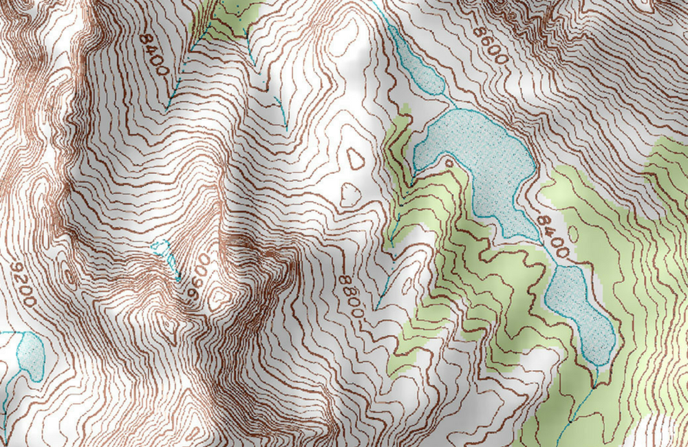
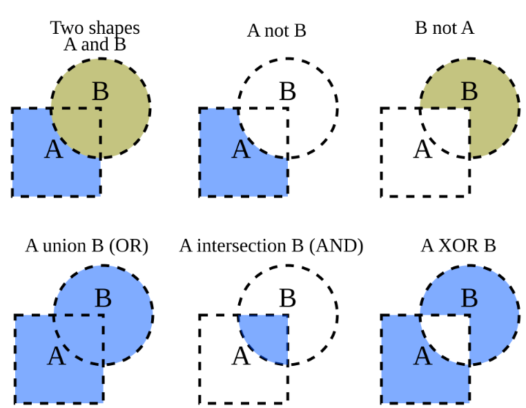
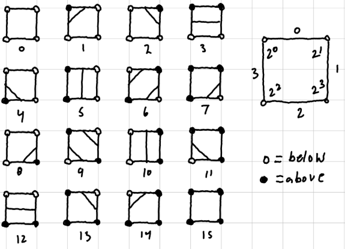
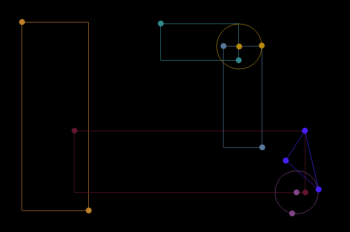
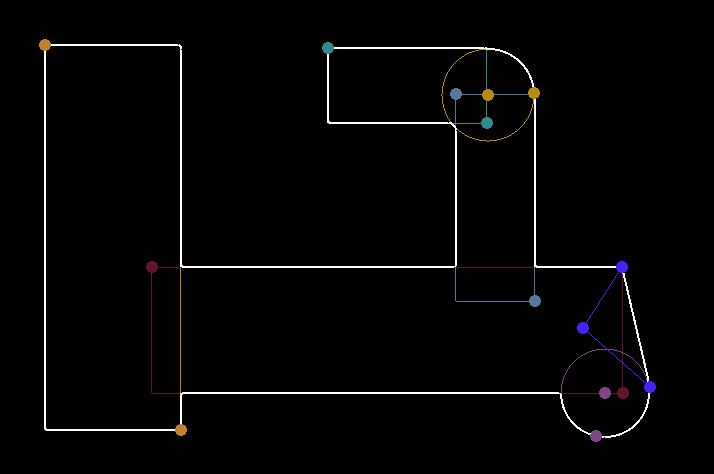
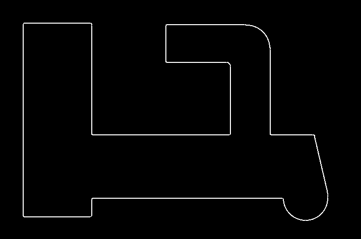
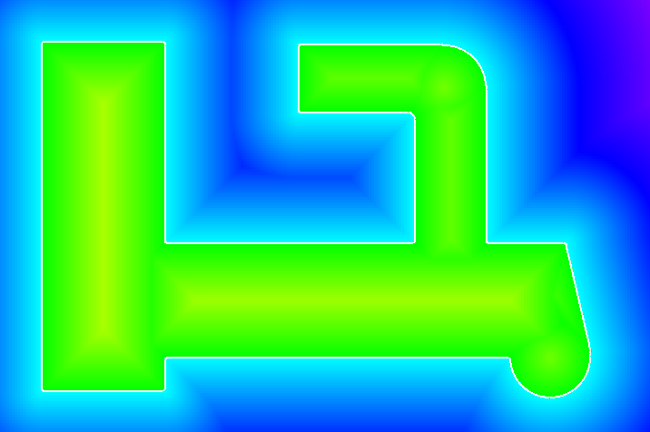

• Use the left cursor to drag a shape's handle/control point.
• Press R to add a rectangle.
• Press C to add a circle.
• Press T to add a triangle.
• Press X to remove a shape.
• Press SPACE to switch between union and intersection modes.
• Use the UP/DOWN arrows to change the grid resolution.
• Press S to toggle the shape rendering.
• Press V to toggle the SDF value rendering.
This project uses marching squares to contour a signed distance function(SDF).
An SDF is a function that takes a point in space and returns the distance to a shape. The sign gives information as to whether the point is outside(+) or inside(-). Inigo Quilez has a great interactive article about the math behind these functions.
Marching squares is an algorithm that constructs an isoline from a scalar field. An isoline is a curve of where each point has constant value. Think of a topographic map, displaying lines of elevation.

In our case, the field is a scalar grid of multiple SDFs of simple shapes. Those multiple functions can then be combined in ways like a union, intersection, or subtraction to create complex manifolds.

It generally follows that the boundary of our model is where these values are zero. SDFs are powerful in this way, as now a complex operation like shelling can be represented with just two threshold checks. Discretizing the field into cells lets us analyze the base case for how to seperate 4 nodes which can be either above or below the threshold.

The key takeway is that geometries can be defined using math instead of discrete elements like points, lines, or triangles. This can also allow us to realize a model with practially infinite resolution, like scalable vector graphics(SVG). Systems like this are implemented in a few computer aided design(CAD) packages. This is an entirely different workflow, as some operations are greatly simplified, while others complicated. It is a balance and truly depends on the types of thing you are designing.



